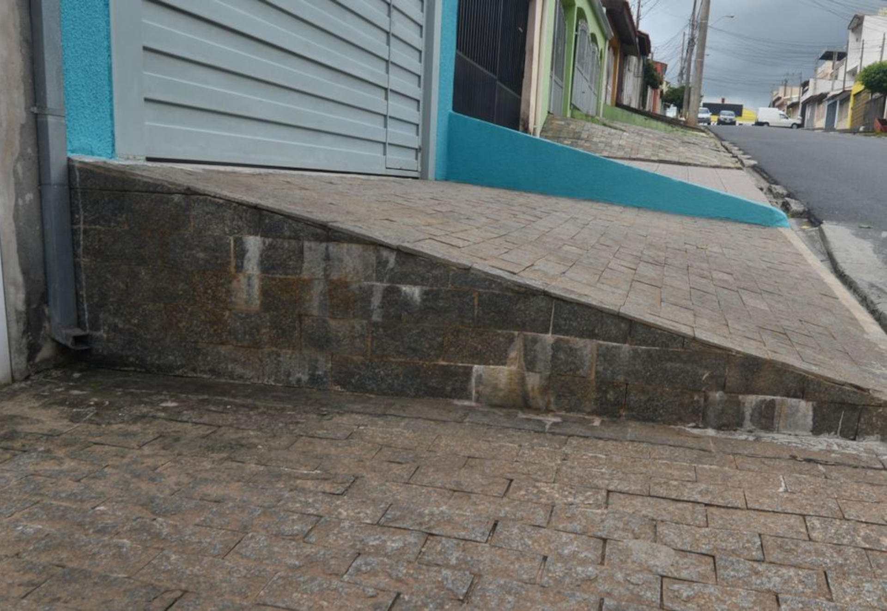

Problemas comuns identificado em ambientes urbano

Calçada irregular com rampa obstruindo a passagem.

Calçada irregular com degrau e objetos obstruindo a passagem.
Acessibilizar pessoas com deficiência visual
Óculos smart é um conceito de óculos inteligente para o ambiente urbano. Seu objetivo é ampliar a acessibilidade urbana, servindo assim como um guia para pessoas com deficiência visual. O dispositivo será equipado com sensores e micro câmeras de alta resolução e também utilizará a tecnologia de inteligência artificial (IA).
As funcionalidades do dispositivo serão baseadas em averiguar e analisar o ambiente em busca de dois fatores: ruas e/ou calçadas irregulares e piso tátil. Quando detectado esses fatores, o equipamento guiará o usuário de acordo com as seguintes situações
Auxiliar pessoas com deficiência visual a superar obstáculos em ambiente urbano em companhia a um óculos inteligente que opera como um guia, assim proporcionando mais segurança, conforto e autonomia, desta forma ampliando a qualidade de vida e a acessibilidade.
A mobilidade urbana no Brasil possui inúmeros problemas, parte dessa adversidade está relacionada pela má infraestrutura urbana no país, assim causando irregularidades e péssimas condições das ruas e calçadas. Por causa destes contratempos, as dificuldades de locomoção vem aumentando cada vez mais, especialmente para pessoas com deficiência.
Porém um dispositivo como um óculos inteligente poderá remediar essas dificuldades para aqueles com a falta de visão ou a cegueira. Equipado com um sistema que utiliza a inteligência artificial, o óculos poderá ter várias funcionalidades em auxiliar o usuário pelo ambiente urbano, assim revolucionado as formas de acessibilidade.
Calçada irregular com rampa obstruindo a passagem.
Calçada irregular com degrau e objetos obstruindo a passagem.